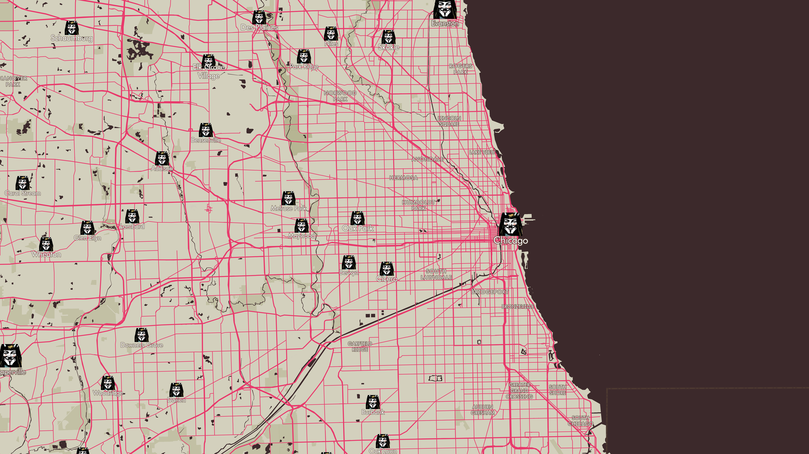

V MAP
Ian Beilfuss
This explainer describes a web map based on the graphic novel V for Vendetta.

V takes inspiration from the dark, noir elements of the graphic novel
For natural features, state, and country labels I used Aachen Bold, a font based on the V for Vendetta logo in the comic book


For cities and road labels I used Cool Book Sands, a font based on the V for Vendetta logo in the 2005 film adaptation



Chicago, IL looks like this.
Orland, Tampa, and other cities resemble explosions, highlighting the themes of violence in V for Vendetta
The the dark water, and high contrast with the land in the Bahamas showcase the noir themes of the novel.
The guy fawkes mask, the most famous icon of the novel, representing resistance, rebellion, and anonymity, is present as a city marker